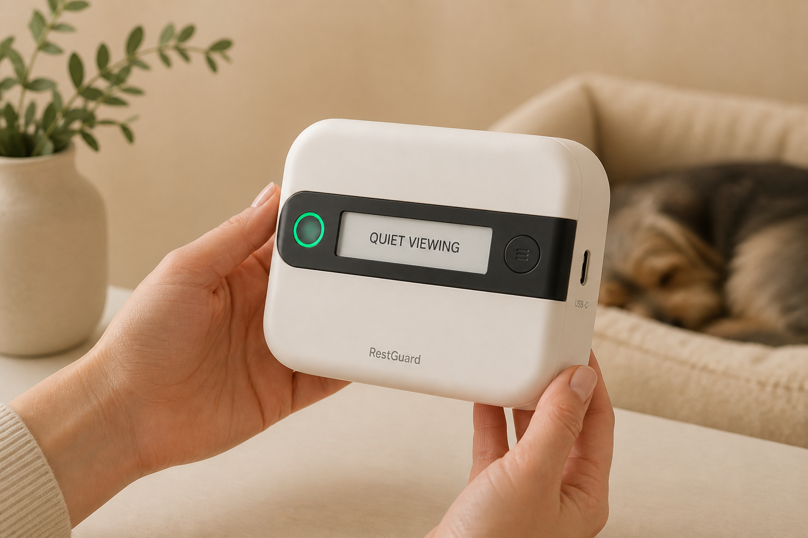
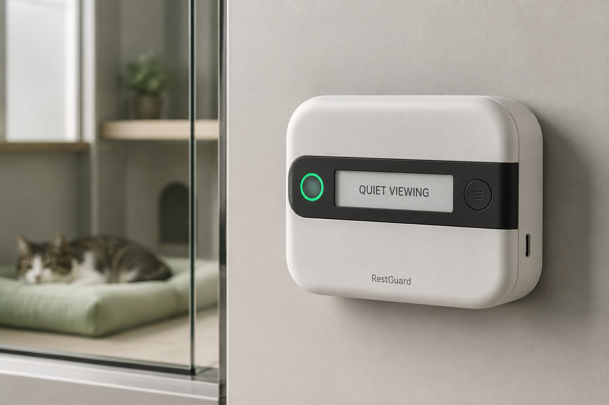
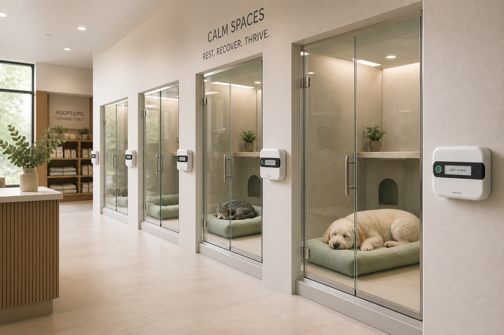

1–2 · Skin
Recycled ABS/PC blend, matte. Dark bezel holds the optical window, light pipe and mic port.
Hardware object / Functional prototype
Before the cream shell sits on an enclosure, the system has to prove it can count useful events. The first electronics object is a compact tracker in the same visual language as a Tracer wearable: a real assembled PCB, strap slots for a bench fixture, a dense top side, USB on the edge.

Specification · functional board
The functional prototype can ride a strap on a test stand while algorithms are still loud and honest. The form prototype later hides a quieter PCB in the cream shell. The strap is for the bench — never for a collar.
| Compute / radio | ESP32-S3, Wi-Fi + Bluetooth, local web staff page |
|---|---|
| Presence | VL53L1X time-of-flight, ~0.3–1.5 m visitor zone, Class 1 emitter |
| Sound | Digital I²S MEMS microphone, RMS summaries only |
| Door | External reed switch + magnet, ≥99% event capture target |
| Outputs | RGB status ring, small monochrome e-paper, recessed staff button |
| Power | USB-C on the enclosure concept; charge IC on the lab board |
| Enclosure target | 100 × 70 × 30 mm rounded shell, matte ABS/PC blend |
| Mounting | Strap slots / M2 on the lab board; sage plate or magnet on the enclosure |

Enclosure revision
Industrial language: rounded cream shell, black bezel, one ring, one e-paper sentence, a recessed staff control. USB-C on the edge. RestGuard printed softly on the fascia. No proud edges inside the animal space — because the device is not inside the animal space.
Green — Quiet viewing


Mechanical stack
Front shell, sensor bezel with light pipe and mic port, electronics, silicone gasket, rear shell, replaceable sage mounting plate. Tool-accessed rear cover. No exposed edge or wire inside the enclosure.

Recycled ABS/PC blend, matte. Dark bezel holds the optical window, light pipe and mic port.
Custom PCB or development modules: ToF, MEMS mic, MCU, ring driver, USB-C.
Gasket, rear shell, sage plate. Magnetic or strap attachment — always external.

In the room
A good engineering report does not pretend every kennel accepts the same brick. Replaceable plates, USB routing, cleaning chemicals, and a pull test on the strap are first-class requirements: compact, durable, serviceable, private, safe.
How the prototype levels split the risk